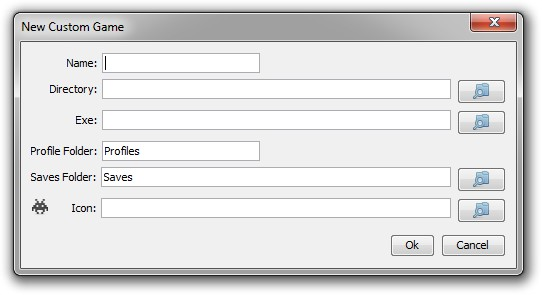

Custom games work by swapping out the contents of the game's saved game folder with the contents of the profile's folder. This means that you can create a custom game for any game that has a save game folder that contains only save game data and not other necessary game files.
When you activate a profile all the files inside the game's saved game folder are moved into the profile folder of the previously active profile. Then all the files inside the folder of the profile being activated are moved into the save game folder.

Name, this is what will appear in the game's as its name.
Directory, the folder that contains the saves folder and does/will contain the profile folder.
Exe, this is the program that will be run when the custom game is launched.
Profile Folder, the name of the folder inside the directory that will contain the profiles.
Saves Folder, the name of the folder inside the directory that contains the game's saved game data.
Icon, this is the icon that will be displayed for the game on its tab. This should be between 16 x 16px and 18 x 18px in size.
The auto create profiles function for custom games will create a profile for every folder
inside the game's saved game folder and the profile folder. It will not sort existing
saved games into folders. There are two ways to set up profiles, both require manually sorting
the saved games:
1) Go into the game's saved game folder and create a new folder for each character.
Then moved the saved games into their respective folder. Once finished run auto create profiles.
2) Create a new profile inside the Profile Manager for each character. Then
move the saved games from the saved game folder into the respective profile folder.
Custom games can be exported and imported into an XML file format. This allows for them to be backed-up and exchanged between users. When a game is imported from another user the directory and exe may need to be updated to reflect their location on your current machine. When exporting to share with other, if you are using a custom icon be sure to include it when sending the file to others.